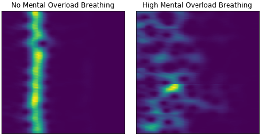
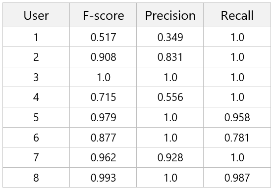
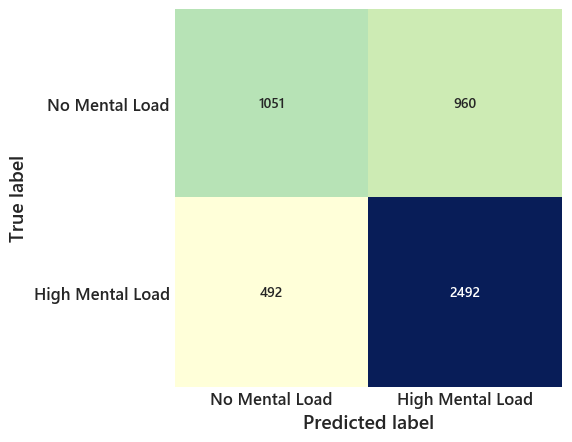

Mental overload or hypertension are part of today’s modern life and it can negatively affect physical as well as mental health [1]. Breathing process is controlled by the Autonomic Nervous System and its monitoring can provide insights into person’s physical and mental conditions. In this blog post, we will learn to detect mental overload from breathing patterns (temperature change around nostril) extracted from a recording of a low-cost thermal camera. We will use a publicly available dataset from [2] consisting of spectrograms (see Figure 1) but we will not go into the details of Region of Interest tracking in raw thermal videos. The dataset is composed of augmented breathing spectrograms of size 120x120 collected from 8 users, where each of them performed Stroop Color Word Test and Mathematics Test of varying difficulty to increase their mental load. The ground-truth annotations are created by applying k-means over self-reported ratings by users. For more details of experimental setup, please look into the paper [3].

Figure 1: Respiration Spectrograms
First, let us load the dataset from file named: respiratory_variability_spectrogram__dataset.mat. It contains four arrays of participants’ ids, spectrograms, binary and multiclass ground-truth labels. The below code swaps axes of train_x array to have a shape of [samples, rows, columns, channels] and reshape one-hot-encoded train_y_binary array to have a shape of [samples, classes]. Then, we will save each participants data separately in different files. It will come handy later while performing leave-one-user-out-cross-validation.
import numpy as np
import pandas as pd
import matplotlib.pyplot as plt
import tensorflow as tf
from scipy.io import loadmat
data = loadmat("respiratory_variability_spectrogram__dataset.mat")
participants_indices = data["subarray"].ravel()
participants = np.unique(participants_indices)
x = data["train_x"]
x = np.swapaxes(x, 1, 2)
x = np.swapaxes(x, 0, 1)
x = x.reshape(-1, 120, 120, 1)
x = tf.Session().run(tf.image.resize_images(x, [28,28]))
y = data["train_y_binary"]
y = np.hstack([y[0].reshape(-1, 1), y[1].reshape(-1, 1)]) # 1 - No Stress and 2 - Stress
for p in participants:
indices = np.where(participants_indices == p)
np.save("".join(["x_",str(p)]), x[indices])
np.save("".join(["y_",str(p)]), y[indices])
We will now define four layers convolutional neural network architecture as specified in the paper to classify spectrograms into a high mental load and no mental load categories.
from keras import backend as K
from keras.models import Model
from keras.optimizers import Adam
from keras.regularizers import l2
from keras.layers import Input, Dense, Flatten, Conv2D, MaxPooling2D
from sklearn.metrics import precision_recall_fscore_support, confusion_matrix
n_dim = 28
n_channels = 1
n_classes = 2
l2_rate = 0.0001
learning_rate = 3e-4
epochs = 5
batch_size = 8
precision, recall, fscore = [], [], []
cfm = []
for p in range(len(participants)):
val_X = np.load("".join(["x_",str(participants[p]), ".npy"]))
val_Y = np.load("".join(["y_",str(participants[p]), ".npy"]))
training_participants = np.delete(participants, p)
tr_X = np.empty((0, n_dim, n_dim, n_channels))
tr_Y = np.empty((0, n_classes))
for p in training_participants:
tr_X = np.vstack([tr_X, np.load("".join(["x_",str(p), ".npy"]))])
tr_Y = np.vstack([tr_Y, np.load("".join(["y_",str(p), ".npy"]))])
K.clear_session()
X = Input(shape=(n_dim, n_dim, n_channels), name = "input")
x = Conv2D(12, kernel_size = 4,
strides = 1,
activation = "relu",
kernel_regularizer=l2(l2_rate),
name = "conv_1")(X)
x = MaxPooling2D(pool_size = 2)(x)
x = Conv2D(24, kernel_size = 4,
strides = 1,
activation = "relu",
kernel_regularizer=l2(l2_rate),
name = "conv_2")(x)
x = MaxPooling2D(pool_size = 2)(x)
x = Flatten()(x)
x = Dense(512, activation = "relu")(x)
predictions = Dense(2, activation = "sigmoid")(x)
model = Model(inputs = X, outputs = predictions)
model.compile(optimizer = Adam(lr = learning_rate), loss = "binary_crossentropy",
metrics = ["accuracy"])
model.fit(tr_X, tr_Y, epochs = epochs, batch_size = batch_size, shuffle = True, verbose = 0)
val_predictions = model.predict(val_X)
p, r, f, _ = precision_recall_fscore_support(np.argmax(val_Y, 1), np.argmax(val_predictions, 1),
average = "binary")
fscore.append(f)
precision.append(p)
recall.append(r)
cfm.append(confusion_matrix(np.argmax(val_Y, 1), np.argmax(val_predictions, 1)))
print(f, " ", p, " ", r)
print("Avg F-Score: ", round(np.mean(fscore), 4), " Avg Precision: ", round(np.mean(precision), 4),
" Avg Recall: ", round(np.mean(recall), 4))The above-described model is trained for 5 epochs and l2 regularization is used on the weights of convolution layers. The summarized results of leave-one-user-out cross-validation are shown below in Table 1 and combined confusion matrix is shown in Figure 2. For a binary classification problem, we achieved f-score of 0.86 with the convolutional neural network.

Table 1: Leave-one-user-out Cross Validation Results

Figure 2: Confusion Matrix
From what I understand this problem is by no means completely solved as the dataset used in the mentioned paper was collected under laboratory based setting. In real-world situation, there can be many constraints and challenges to successfully apply this methods. Likewise, model generalization could be difficult for people having different body temperatures; if training set does not cover them. The optimal quantization technique discussed in [4] could be feasible to address different body temperatures. For future work, there is a possibility to try data augmentation, combining facial features from a different but similar dataset, and developing a complete app that will include region-of-interest detection, extraction of spectrogram representing breathing variability and classifying it using the deep model in an everyday situation.
Here, we learn to detect mental load from breathing pattern dynamics by extracting respiration variability spectrogram from low-cost thermal imaging camera. The ipython notebook with complete code is accessible from the following link.